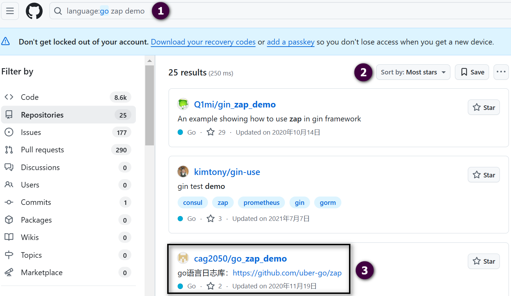
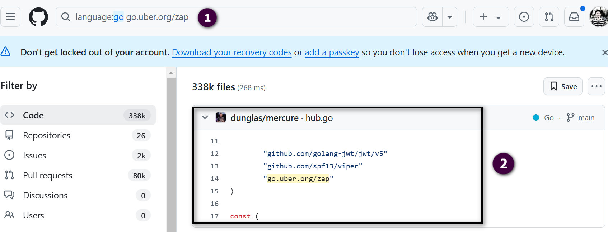

基础 Go 包开发：日志包设计和实现
在 Go 语言中，包是组织代码的一种基本方式，用于管理和复用代码。Go 提供了强大的包机制，通过包可以将代码分成若干模块，以提高代码的可读性、可复用性和可维护性。在 Go 项目开发中，经常会用到各种类型的包，其中有一些 Go 包会被频繁使用到，并且在 Go 项目开发中需要进行适配。
高频使用的 Go 包有很多，例如：cobra、viper、pflag、gorm、gin、grpc、zap、logrus、uuid、resty、casbin、jwt-go、validator、lru 等。上述常用的 Go 包，在项目开发中一般不需要做二次适配便可直接使用。但是有些基础的 Go 包需要二次开发或者从零开发才能够满足 Go 项目的需求。最常见的需要二次适配的 Go 包是日志包和错误包。
如何记录日志
在开发日志包之前，需要先明白代码中，是如何记录日志的。之后，根据记录日志的需求特点开发满足项目需要的日志包。记录日志通常涉及到以下几个方面：
- 日志记录方式；
- 日志记录规范；
- 日志保存方式。
日志记录方式
在 Go 项目开发中，通过日志包来记录日志。所以，在项目开发之前，需要准备一个易用、满足需求的 Go 日志包。准备日志包的方式有以下三种：
- 使用开源日志包：使用开源的日志包，例如 log、glog、logrus、zap 等。Docker、 ilium、Tyk 等项目使用了 logrus，etcd 则使用了 log 和 zap；
- 定制化开源日志包：基于开源日志包封装一个满足特定需求的日志包。例如，Kubernetes 使用的 klog 是基于 glog 开发的。有些项目封装的日志包还会兼容多种类别的 Logger；
- 自研日志包：根据需求，从零开发一个日志包。
使用开源日志包
如果对记录日志没有特殊需求，并且已经有优秀的开源日志包可供选择，那么直接使用原生的开源日志包，无需封装或自行研发。这样不仅可以充分利用开源日志包的功能，还能随开源日志包进行功能升级与迭代。最重要的是，这种方式能够显著提高开发效率，减少日志包维护的工作量。
然而，在以下情景下，可以考虑封装或自研一个新的日志包：
- 需要满足定制化需求，而现有的开源日志包无法满足这些需求；
- 拥有较强的研发能力，能够开发出在性能或功能上优于当前开源日志包的日志包；
- 有定制化的日志记录需求。
目前已有许多开源日志包，社区比较受欢迎的开源日志包有 logrus、zap、zerolog、apex/log、log15 等。其中最受欢迎的两个日志包是 logrus 和 zap。
logrus 功能强大、使用简单，不仅实现了日志包的基本功能，还有很多高级特性，适合一些大型项目，尤其是需要结构化日志记录的项目。因为 logrus 封装了很多能力，性能一般。
zap 提供了很强大的日志功能，性能高，内存分配次数少，适合对日志性能要求很高的项目。另外，zap 包中的子包 zapcore，提供了很多底层的日志接口，适合用来做二次封装。
在企业级 Go 应用开发时，通常会在 logrus、zap 二者之间进行选择，选择建议如下：
- 如果对性能要求不高，更加注重日志包的功能和易用性，可以选择 logrus；
- 如果对性能有较高要求，同时希望日志包更加灵活和可定制化，可以选择 zap。
miniblog 项目选择了 zap，因为 zap 具有较高的性能，同时使用便捷，并易于定制。实际上，zap 也可以作为今后 Go 项目开发的首选日志包。
定制化开源日志包
在实际开发中，基于开源日志包开发定制化日志包的主要原因在于，开源日志包无法完全满足特定需求。例如，kubernetes 团队由于 glog 存在缺陷且已停止维护，基于 glog 重新开发了 klog。此外，一些团队需要在日志中添加固定字段（如用户名、请求 ID 等），因此对开源日志包进行了改造；还有一些团队需要根据日志内容触发回调逻辑，而这类需求通常难以通过现有的开源日志包实现，因此选择定制化开发。
在企业级应用开发过程中，出于多种需求，定制化开发新的日志包是一种常见的现象。然而，在决定开发新的日志包之前，应当认真思考以下问题：是否确实需要开发一个新的日志包？现有的开源日志包是否完全无法满足需求？
自研日志包
如果前两种方式无法满足日志记录需求，可以考虑自主研发一个日志包。然而，自主研发日志包需要较高的研发能力且开发周期较长，因此并不推荐，这里不作详细介绍。
日志记录规范
记录日志的方式实际上就是遵循项目制定的日志规范，通过调用日志包提供的方法来记录日志。
miniblog 也制定了相应的日志规范，具体规范内容见 docs/devel/zh-CN/conversions/logging.md。该日志规范可以在后续的开发过程中根据需求不断更新和迭代。在 miniblog 的日志规范中，有以下两点规范需要注意：
- 错误日志应在最初发生错误的位置打印。这样做一方面可以避免上层代码缺失关键的日志信息（因为上层代码可能无法获取错误发生处的详细信息），另一方面可以减少日志漏打的情况（距离错误发生位置越远，越容易忽略错误的存在，从而导致日志未被打印）；
- 当调用第三方报函数或放发报错时，需要在错误处打印日志，例如：
if err := os.Chdir("/root"); err != nil {
log.Errorf("change dir failed: %v", err)
}
对于嵌套的 Error，可在 Error 产生的最初位置打印 Error 日志，上层如果不需要添加必要的信息，可以直接返回下层的 Error。例如：
package main
import (
"flag"
"fmt"
"github.com/golang/glog"
)
func main() {
flag.Parse()
defer glog.Flush()
if err := loadConfig(); err != nil {
glog.Error(err)
}
}
// 正例：直接返回错误
func loadConfig() error {
return decodeConfig() // 直接返回
}
// 正例：如果需要基于函数返回的错误，封装更多的信息，可以封装返回的 err。否则，建议直接返回 err
func decodeConfig() error {
if err := readConfig(); err != nil {
// 添加必要的信息，用户名称
return fmt.Errorf("could not decode configuration data for user %s: %v", "colin", err)
}
return nil
}
func readConfig() error {
glog.Errorf("read: end of input.")
return fmt.Errorf("read: end of input")
}
在最初产生错误的位置打印日志，可以很方便地追踪到错误产生的根源，并且错误日志只打印一次，可以减少重复的日志打印，减少排障时重复日志干扰，也可以提高代码的简洁度。当然，在开发中也可以根据需要对错误补充一些有用的信息，以记录错误产生的其他影响。
日志保存方式
我们可以将日志保存到任意需要的位置，常见的保存位置包括以下几种：
- **标准输出：**通常用于开发和测试阶段，主要目的是便于调试和查看；
- **日志文件：**这是生产环境中最常见的日志保存方式。保存的日志通常会被 Filebeat、Fluentd 等日志采集组件收集，并存储到 Elasticsearch 等系统中；
- **消息中间件：**例如 Kafka。日志包会调用 API 接口将日志保存到 Kafka 中。为了提高性能，通常会使用异步任务队列异步保存。然而，在这种情况下，需要开发异步上报逻辑，且服务重启时可能导致日志丢失，因此这种方式较少被采用。
当前比较受欢迎的日志包（如 zap、logrus 等）都支持将日志同时保存到多个位置。例如，miniblog 项目的日志包底层封装了 zap，zap 支持同时将日志输出到标准输出和日志文件中。
如果应用采用容器化部署，建议优先将日志输出到标准输出。容器平台通常具备采集容器日志的能力，采集日志时可以选择从标准输出采集或从容器内的日志文件中采集。如果选择从日志文件采集，则需要配置日志采集路径；而如果选择从标准输出采集，则无需额外配置，可以直接复用容器平台现有的能力，从而实现日志记录与日志采集的完全解耦。在 Kubernetes 最新的日志设计方案中，也建议应用直接将日志输出到标准输出。
miniblog 日志包开发
前面介绍了在 Go 项目开发中，日志的记录方式和日志包的开发方式。为了给你详细展示日志包的设计和实现过程，本节会展示如何从零开发一个日志包，本节最终代码位于 feature/s06 分支。
在 Go 项目开发中，通常会因为以下原因，选择从零开发一个日志包：
- 为了方便通过日志进行问题排查，需要在每一行日志中打印一些自定义字段，例如请求 ID、用户名等。虽然目前许多日志包（如 logrus、zap 等）都支持添加日志字段，但使用方式较为繁琐，且代码可读性较差；
- 随着项目功能的不断迭代，未来可能会出现特殊的日志需求。因此，开发一个定制的日志包可以为未来的技术扩展做好准备，预留足够的扩展空间；
- logrus、zap 等日志包功能丰富，但许多功能在项目开发中并不需要。因此，我考虑定制一个精简的日志包。精简的日志包不仅易于使用，同时其有限的功能也有助于规范日志记录（日志包提供的日志记录函数数量直接影响代码中日志记录方式的种类，功能过多可能导致难以实现规范化和统一化）。
日志包设计方式
在 Go 项目开发中，日志包实现方法有很多，但大都遵循以下设计方式：
- 设计日志接口，通常命名为 Logger，日志接口中定义需要的日志方法；
- 定义日志级别类型，并定义日志级别；
- 定义日志结构体类型，例如：xxxLogger。xxxLogger 中包括需要的字段，例如日志级别。xxxLogger 通常会实现一个打印日志的基础方法。Logger 接口中定义的方法，均通过调用基础方法实现日志打印。xxxLogger 也可以包含其他日志包的日志实例，从而在输出日志时，调用其他日志包的方法进行输出；
- 实现创建 xxxLogger 实例的 New 方法；
- xxxLogger 结构体类型实现 Logger 接口中定义的方法。
遵循上述日志设计方法的代码示例如代码清单 6-1 所示。
代码清单 6-1 日志设计方法示例
package main
import (
"fmt"
"strings"
)
// 定义日志级别
const (
DebugLevel = iota
InfoLevel
WarnLevel
ErrorLevel
)
// Logger 定义日志接口，包含常用日志方法.
type Logger interface {
Debug(msg string)
Info(msg string)
Warn(msg string)
Error(msg string)
}
// customLogger 是 Logger 接口的具体实现.
type customLogger struct {
level int // 日志级别
prefix string // 日志前缀
}
// New 创建一个 customLogger 实例.
func New(level int, prefix string) Logger {
return &customLogger{level: level, prefix: prefix}
}
// logMessage 是内部方法，根据日志级别打印日志.
func (l *customLogger) logMessage(level int, levelStr string, msg string) {
if level >= l.level { // 只有当日志级别大于等于设定的级别时才打印
fmt.Printf("[%s] %s: %s\n", strings.ToUpper(levelStr), l.prefix, msg)
}
}
// Debug 实现 Logger 接口的 Debug 方法.
func (l *customLogger) Debug(msg string) {
l.logMessage(DebugLevel, "debug", msg)
}
// Info 实现 Logger 接口的 Info 方法.
func (l *customLogger) Info(msg string) {
l.logMessage(InfoLevel, "info", msg)
}
// Warn 实现 Logger 接口的 Warn 方法.
func (l *customLogger) Warn(msg string) {
l.logMessage(WarnLevel, "warn", msg)
}
// Error 实现 Logger 接口的 Error 方法.
func (l *customLogger) Error(msg string) {
l.logMessage(ErrorLevel, "error", msg)
}
func main() {
// 创建一个日志实例，日志级别为 Info
logger := New(InfoLevel, "MyApp")
// 根据不同级别打印日志
logger.Debug("This is a debug message") // 不会打印（级别低于 Info）
logger.Info("This is an info message") // 会打印
}
miniblog 日志包开发
在定制开发日志包之前，应该先选择一个合适的开源日志包，并在其基础上进行封装。miniblog 项目选择 zap 作为基础日志包。因此，在定制开发之前，需要熟悉 zap 的使用方法，可参考相关的 zap 使用文档进行学习。
定制开发日志包的步骤如下：
（1）定义日志接口；
（2）定义日志类型；
（3）编写创建日志实例函数；
（4）实现日志实例化代码；
（5）实现日志接口。
定义日志接口
在开发日志包之前，需要根据日志记录需要定义日志接口，接口中包含需要用到的日志记录方法。在设计日志接口时，需要考虑以下两点：
- **日志级别：**在记录日志时，按严重性由低到高通常包括 Debug、Info、Warn、Error、Panic、Fatal 级别。Warn 级别在有些日志包中也叫 Warning 级别；
- **日志记录方法：**每个日志级别，根据记录方式，又包括非格式化记录、格式化记录和结构化记录三种方式。形如 Info(msg string) 的方法为非格式化记录方式。形如 Infof(format string, args ...any) 的方法为格式化记录方式。形如 Infow(msg string, kvs ...any) 的方法为结构化记录方式。Infow 方法名中的 w 代表“with”，即“带有”额外的上下文信息。这些方法与没有 w 的方法（如 Debug，Info 等）相比，允许你在日志消息后面附加额外的键值对（key-value），从而提供更详细的上下文信息。
在 Go 项目开发中，建议的日志记录方式为结构化记录方式。格式化记录方式可以通过结构化记录方式来替代，例如：log.Infof("Failed to create user: %s", username) 可替换为 log.Infow("Failed to create user", "username", username)。
另外，结构化记录方式也可以替代非结构化记录方式，例如 log.Infof("Failed to create user") 可替换为 log.Infow("Failed to create user")。
所以，miniblog 项目为了方便日志记录，降低开发者理解日志记录方法的负担，只实现了结构化记录方法。最终 miniblog 日志接口定义（位于文件 internal/pkg/log/log.go 中）如代码清单 6-2 所示。
代码清单 6-2 日志接口定义
// Logger 定义了 miniblog 项目的日志接口。
// 该接口包含了项目中支持的日志记录方法，提供对不同日志级别的支持。
type Logger interface {
// Debugw 用于记录调试级别的日志，通常用于开发阶段，包含详细的调试信息。
Debugw(msg string, kvs ...any)
// Infow 用于记录信息级别的日志，表示系统的正常运行状态。
Infow(msg string, kvs ...any)
// Warnw 用于记录警告级别的日志，表示可能存在问题但不影响系统正常运行。
Warnw(msg string, kvs ...any)
// Errorw 用于记录错误级别的日志，表示系统运行中出现的错误，需要开发人员介入处理。
Errorw(msg string, kvs ...any)
// Panicw 用于记录严重错误级别的日志，表示系统无法继续运行，记录日志后会触发 panic。
Panicw(msg string, kvs ...any)
// Fatalw 用于记录致命错误级别的日志，表示系统无法继续运行，记录日志后会直接退出程序。
Fatalw(msg string, kvs ...any)
// Sync 用于刷新日志缓冲区，确保日志被完整写入目标存储。
Sync()
}
将日志包 log 放置在 internal/pkg 目录下的原因在于，日志包封装了一些定制化的逻辑，不适合对外暴露，所以不适合放在 pkg/ 目录下。但是日志包又是项目内的共享包，所以需要放在 internal/pkg 目录下。
miniblog 为了降低开发者使用日志时的理解、学习成本，仅实现了核心的日志方法。这种仅实现核心日志功能的设计方式牺牲了一些功能和灵活性，但带来了更高的一致性。
通过定义 Logger 接口，可以体现接口即规范的编程哲学。这意味着，通过 Logger 接口可以清晰地表明 zapLogger 需要实现哪些方法，并明确日志调用者应调用哪些方法。在 Go 项目中，通常将日志接口命名为 Logger。
定义日志类型
在文件 internal/pkg/log/log.go 中，通过以下代码定义了一个日志类型：
// zapLogger 是 Logger 接口的具体实现. 它底层封装了 zap.Logger.
type zapLogger struct {
z *zap.Logger
}
将日志类型定义为不可导出的 zapLogger 类型是因为开发者在使用日志包时，不需要关注日志具体的实现细节，只需要调用日志接口包含的方法即可。定义为不可导出的类型，有利于日志类型的封装和维护，屏蔽实现细节。
zapLogger 日志类型包含了 *zap.Logger 类型的字段 z，是因为 zapLogger 底层会调用 *zap.Logger 类型实例 z 提供的日志记录方法。
编写创建日志实例函数
一个日志包通常包含两类 zapLogger 对象：一类是全局对象，另一类是局部对象。全局对象便于通过类似 log.Infow() 的方式直接调用，而局部对象则方便传入不同参数以创建自定义的 Logger。为了实现这一目标，通常需要实现以下两种函数：
// New 根据提供的 Options 参数创建一个自定义的 zapLogger 对象.
// 如果 Options 参数为空，则会使用默认的 Options 配置.
func New(opts *Options) *zapLogger
// Init 初始化全局的日志对象.
func Init(opts *Options)
Init 函数通过调用 New 函数来创建 *zapLogger 类型的实例，并将其赋值给类型为 *zapLogger 的全局变量 std。创建一个全局变量的原因将在后文说明。
New 和 Init 函数中的 Options 结构体类型包含了日志的配置项。在开发初期，可以将 Options 定义为空结构体，其字段后面根据需要陆续添加。
此外，根据 Go 代码开发的最佳实践，建议给 Options 结构体添加一个 NewOptions() *Options 函数，用于创建带有默认值的 *Options 对象。通过这种方式，简化创建日志实例时的配置。
有些代码实现中，会将 Options 命名为 LoggerOptions，建议直接使用简洁的 Options 作为名称。因为通过 <包名.结构体名> 的调用方式，已经能够明确 Options 是一个日志配置结构体。
基于上述思路，开发完成的代码如代码清单 6-3 所示（位于 internal/pkg/log/log.go 文件中）。
package log
import (
"sync"
"go.uber.org/zap"
)
// Logger 定义了 miniblog 项目的日志接口.
// 该接口包含了项目中支持的日志记录方法，提供对不同日志级别的支持。
type Logger interface {
// Debugw 用于记录调试级别的日志，通常用于开发阶段，包含详细的调试信息。
Debugw(msg string, kvs ...any)
// Infow 用于记录信息级别的日志，表示系统的正常运行状态。
Infow(msg string, kvs ...any)
// Warnw 用于记录警告级别的日志，表示可能存在问题但不影响系统正常运行。
Warnw(msg string, kvs ...any)
// Errorw 用于记录错误级别的日志，表示系统运行中出现的错误，需要开发人员介入处理。
Errorw(msg string, kvs ...any)
// Panicw 用于记录严重错误级别的日志，表示系统无法继续运行，记录日志后会触发 panic。
Panicw(msg string, kvs ...any)
// Fatalw 用于记录致命错误级别的日志，表示系统无法继续运行，记录日志后会直接退出程序。
Fatalw(msg string, kvs ...any)
// Sync 用于刷新日志缓冲区，确保日志被完整写入目标存储。
Sync()
}
// zapLogger 是 Logger 接口的具体实现. 它底层封装了 zap.Logger.
type zapLogger struct {
z *zap.Logger
}
// Options 定义了日志配置的选项结构体.
// 通过该结构体，可以自定义日志的输出格式、级别以及其他相关配置.
type Options struct{}
var (
mu sync.Mutex
// std 定义了默认的全局 Logger.
std = New(NewOptions())
)
// Init 初始化全局的日志对象.
func Init(opts *Options) {
// 因为会给全局变量 std 赋值，所以这里对 std 变量加锁，防止出现并发问题.
mu.Lock()
defer mu.Unlock()
std = New(opts)
}
// New 根据提供的 Options 参数创建一个自定义的 zapLogger 对象.
// 如果 Options 参数为空，则会使用默认的 Options 配置。
func New(opts *Options) *zapLogger {
if opts == nil {
opts = NewOptions()
}
return &zapLogger{z: &zap.Logger{}}
}
// NewOptions 创建并返回一个带有默认值的 Options 对象.
// 该方法用于初始化日志配置选项，提供默认的日志级别、格式和输出位置.
func NewOptions() *Options {
return &Options{}
}
实现日志实例化代码
实例化 *zapLogger 类型的日志，其实就是实例化 *zapLogger 类型中的各个字段。*zapLogger 类型只包含了 *zap.Logger 类型的字段。所以，实例化 *zapLogger 类型，其实就是实例化 *zap.Logger 类型。本节会详细介绍日志实例化代码的开发及思考过程，以使你了解项目开发中，如何去实现一个功能。
实例化 *zap.Logger 类型，最容易想到的方法，是借助于谷歌/百度搜索，或者 GPT 类工具给出一个实例化*zap.Logger 类型的示例。最简单的方式是编写详细的 GPT 提示词，让 GPT 类软件给出具体的 New 方法实现。但如果之前没有实现过 Go 日志包，出于学习需要，建议先调研社区其他开发者的实现方式，再参考 GPT 给出的代码实现，选择最优、最符合要求的实现。有三种方法可以用来调研社区其他开发者的代码实现：阅读 zap 官方文档、GitHub 查找相关示例仓库、GitHub 查找相关实现代码。
（1）方法一：阅读 zap 官方文档。
最简单、便捷的方法是从 zap 官方仓库的 README 文件和 examples 这类目录中查找需要的代码示例。官方仓库是最可能存放 zap 代码示例的地方。因为是官方仓库，所实现方式会比较标准，代码质量也相对较高，建议优先考虑从官方仓库中调研查找。
（2）方法二：GitHub 查找相关示例仓库。
如果官方仓库中找不到相关的代码示例，还可以在 GitHub 上查找可能有相关实现的代码仓库。GitHub 上有大量开源的仓库和代码实现，可以通过在 GitHub 上进行详细搜索和查找，了解其他开发者的设计思路和实现方法。相比于仅仅找到所需的代码示例，更大的价值在于调研过程中能够学习到更多关于 zap 包的使用方法。比较建议的查找方法如图 6-1 所示。

首先，在 GitHub 的搜索栏中输入 language:go zap demo，以检索同时在仓库名称或仓库描述中包含"zap"和"demo"关键字的 Go 代码仓库，并按照"Most stars"进行排序。接着，从搜索结果中从上到下依次阅读代码仓库，通过仓库名称及描述判断其是否为可供参考的 Go 项目，若符合条件，则进入相应仓库以获取更详细的信息。最后，如果找到合适的代码，可参考其实现用于创建 *zap.Logger，若未找到合适代码示例，则继续查找。
（3）方法三：GitHub 查找相关实现代码。
如果没有找到需要的代码，则需要进行更深入的查找。可以通过查找使用了 zap 包的代码，根据代码来判断 Go 代码段或者代码段所在的项目是否可以借鉴使用，查找方法如图 6-2 所示。

在 GitHub 的搜索栏中输入 language:go go.uber.org/zap，以检索可能封装了 zap 包的代码段。根据检索到的代码段内容，判断其是否具有参考价值。若具有参考价值，则打开对应文件阅读其源码，并在确认源码可用后，进一步了解其所属的代码仓库，此时可能会发现该代码仓库包含一个完整的实现。
通过以上三种查找方式，可能你已经找到创建 *zap.Logger 类型实例的创建方法，并且在查找过程中，学到了更多 zap 包的使用方法。
当前 LLM 能力日渐强大，GPT 类软件可以根据需要写出符合要求的高质量 Go 代码。所以，最后，还可以通过编写合理的 GPT 提示词，来告诉 GPT 生成期望的代码，并审核 GPT 实现的代码是否可用以及是否是最佳实现方法。以下是一个 GPT 提示词示例：
假设你是一名专业的Go开发者，要开发一个日志包，日志结构体定义为：
type zapLogger struct {
z *zap.Logger
}
zapLogger 实例创建方法为：
func New(opts *Options) *zapLogger {
}
请根据New方法声明，完善New方法实现和Options结构体定义。
将以上 GPT 提示词输入给 GPT 工具，并查看 GPT 工具输出的代码示例。GPT 生成的代码可能存在幻觉问题，并不一定对。另外，GPT 生成的代码，并不一定是最佳实现方法。可以根据之前的 GitHub 调研、学习，并参考 GPT 的实现，给出最终的代码实现。最终代码实现如代码清单 6-4 所示。
代码清单 6-4 New 方法实现
// Options 定义了日志配置的选项结构体.
// 通过该结构体，可以自定义日志的输出格式、级别以及其他相关配置.
type Options struct {
// DisableCaller 指定是否禁用 caller 信息.
// 如果设置为 false（默认值），日志中会显示调用日志所在的文件名和行号，例如："caller":"main.go:42".
DisableCaller bool
// DisableStacktrace 指定是否禁用堆栈信息.
// 如果设置为 false（默认值），在日志级别为 panic 或更高时，会打印堆栈跟踪信息.
DisableStacktrace bool
// Level 指定日志级别.
// 可选值包括：debug、info、warn、error、dpanic、panic、fatal.
// 默认值为 info.
Level string
// Format 指定日志的输出格式.
// 可选值包括：console（控制台格式）和 json（JSON 格式）.
// 默认值为 console.
Format string
// OutputPaths 指定日志的输出位置.
// 默认值为标准输出（stdout），也可以指定文件路径或其他输出目标.
OutputPaths []string
}
// NewOptions 创建并返回一个带有默认值的 Options 对象.
// 该方法用于初始化日志配置选项，提供默认的日志级别、格式和输出位置.
func NewOptions() *Options {
return &Options{
// 默认启用 caller 信息
DisableCaller: false,
// 默认启用堆栈信息
DisableStacktrace: false,
// 默认日志级别为 info
Level: zapcore.InfoLevel.String(),
// 默认日志输出格式为 console
Format: "console",
// 默认日志输出位置为标准输出
OutputPaths: []string{"stdout"},
}
}
// New 根据提供的 Options 参数创建一个自定义的 zapLogger 对象.
// 如果 Options 参数为空，则会使用默认的 Options 配置。
func New(opts *Options) *zapLogger {
// 如果 opts 为空，则使用默认配置
if opts == nil {
opts = NewOptions()
}
// 将 Options 中的日志级别（字符串）转换为 zapcore.Level 类型
var zapLevel zapcore.Level
if err := zapLevel.UnmarshalText([]byte(opts.Level)); err != nil {
// 如果指定了非法的日志级别，则默认使用 info 级别
zapLevel = zapcore.InfoLevel
}
// 创建 encoder 配置，用于控制日志的输出格式
encoderConfig := zap.NewProductionEncoderConfig()
// 自定义 MessageKey 为 message，message 语义更明确
encoderConfig.MessageKey = "message"
// 自定义 TimeKey 为 timestamp，timestamp 语义更明确
encoderConfig.TimeKey = "timestamp"
// 指定时间序列化函数，将时间序列化为 `2006-01-02 15:04:05.000` 格式，更易读
encoderConfig.EncodeTime = func(t time.Time, enc zapcore.PrimitiveArrayEncoder) {
enc.AppendString(t.Format("2006-01-02 15:04:05.000"))
}
// 指定 time.Duration 序列化函数，将 time.Duration 序列化为经过的毫秒数的浮点数
// 毫秒数比默认的秒数更精确
encoderConfig.EncodeDuration = func(d time.Duration, enc zapcore.PrimitiveArrayEncoder) {
enc.AppendFloat64(float64(d) / float64(time.Millisecond))
}
// 创建构建 zap.Logger 需要的配置
cfg := &zap.Config{
// 是否在日志中显示调用日志所在的文件和行号，例如：`"caller":"apiserver/server.go:75"`
DisableCaller: opts.DisableCaller,
// 是否禁止在 panic 及以上级别打印堆栈信息
DisableStacktrace: opts.DisableStacktrace,
// 指定日志级别
Level: zap.NewAtomicLevelAt(zapLevel),
// 指定日志显示格式，可选值：console, json
Encoding: opts.Format,
EncoderConfig: encoderConfig,
// 指定日志输出位置
OutputPaths: opts.OutputPaths,
// 设置 zap 内部错误输出位置
ErrorOutputPaths: []string{"stderr"},
}
// 使用 cfg 创建 *zap.Logger 对象
z, err := cfg.Build(zap.AddStacktrace(zapcore.PanicLevel), zap.AddCallerSkip(2))
if err != nil {
panic(err)
}
// 将标准库的 log 输出重定向到 zap.Logger
zap.RedirectStdLog(z)
return &zapLogger{z: z}
}
New 方法中包含了 *zap.Logger 类型实例的初始化方法。代码已经有详尽的注释，课程中不再对代码清单 6-4 进行说明。在代码清单 6-4 中，有以下开发技巧可供参考。
创建一个默认配置并根据需要修改指定字段，是一种良好的开发方式。例如：
// 创建 encoder 配置，用于控制日志的输出格式
encoderConfig := zap.NewProductionEncoderConfig()
// 自定义 MessageKey 为 message，message 语义更明确
encoderConfig.MessageKey = "message"
// 自定义 TimeKey 为 timestamp，timestamp 语义更明确
encoderConfig.TimeKey = "timestamp"
为了便于编译查找和分类管理，miniblog 将 Options 的定义与创建单独放置在了 options.go 文件中，以实现文件级别的功能代码隔离。
在 Go 项目开发过程中，应始终考虑如何使程序更易读、更易维护。例如，为了提升日志的可读性，上述代码将 ts 修改为 timestamp，将 msg 修改为 message，并将时间格式从 1669314079.4161139 转换为 2022-11-24 23:12:25.479。
由于 log 包对 zap 包进行了封装，因此在调用栈中需要跳过的调用深度应增加 2，即使用 zap.AddCallerSkip(2)。
实现日志接口
New 方法会实例化并返回 *zapLogger 类型的实例。接下来就可以给 *zapLogger 结构体添加 Logger 接口中定义的方法。*zapLogger 结构体类型中包含了 *zap.Logger 类型的实例 z。可以使用 z 实例中提供的各类日志方法来封装需要的 Logger 方法。代码清单 6-5 是 Debugw(msg string, kvs ...any) 方法的具体实现。
代码清单 6-5 Debugw 方法实现
// Debugw 输出 debug 级别的日志.
func Debugw(msg string, kvs ...any) {
std.Debugw(msg, kvs...)
}
func (l *zapLogger) Debugw(msg string, kvs ...any) {
l.z.Sugar().Debugw(msg, kvs...)
}
func (l *zapLogger) Debugw(msg string, kvs ...any) 方法调用了 *zap.Logger 的 Sugar().Debugw() 方法，用于以结构化方式输出 debug 级别的日志。
为了便于通过 log.Debugw() 输出日志，代码清单 6-5 实现了一个包级别函数 Debugw。该函数通过调用*zapLogger 类型的全局变量 std 的 Debugw(msg string, kvs ...any) 方法，输出 debug 级别的日志。这里要注意，Debugw 函数内部应该直接调用 std.Debugw(msg, kvs...)，而非 std.z.Sugar().Debugw(msg, kvs...)，这样可以复用 *zapLogger 类型的 Debugw 方法现在以及未来可能的实现逻辑。
同理，我们可以为 *zapLogger 实现 Logger 接口中定义的其他方法。
为了在编译阶段确保 *zapLogger 实现了 Logger 接口，可以在 log.go 文件中添加以下变量定义：
var _ Logger = (*zapLogger)(nil)
通过上述变量赋值，如果 *zapLogger 未实现 Logger 接口，代码将在编译阶段报错。此类编程技巧在 Go 项目开发中被广泛使用。
miniblog 日志包测试
在开发完 Go 包之后，本节通过给 log 包添加示例测试用例，来展示如何使用 log 包。示例用例实现如代码清单 6-6 所示。
代码清单 6-6 log 包示例测试
package log_test
import (
"testing"
"time"
"github.com/ketitongxue/miniblog/internal/pkg/log"
)
func TestLogger(t *testing.T) {
// 自定义日志配置
opts := &log.Options{
Level: "debug", // 设置日志级别为 debug
Format: "json", // 设置日志格式为 JSON
DisableCaller: false, // 显示调用日志的文件和行号
DisableStacktrace: false, // 允许打印堆栈信息
OutputPaths: []string{"stdout"}, // 将日志输出到标准输出
}
// 初始化全局日志对象
log.Init(opts)
// 测试不同级别的日志输出
log.Debugw("This is a debug message", "key1", "value1", "key2", 123)
log.Infow("This is an info message", "key", "value")
log.Warnw("This is a warning message", "timestamp", time.Now())
log.Errorw("This is an error message", "error", "something went wrong")
// 注意：Panicw 和 Fatalw 会中断程序运行，因此在测试中应小心使用。
// 可以注释掉以下两行进行测试，或者在单独的环境中运行。
// log.Panicw("This is a panic message", "reason", "unexpected situation")
// log.Fatalw("This is a fatal message", "reason", "critical failure")
// 确保日志缓冲区被刷新
log.Sync()
}
将上述代码保存在 internal/pkg/log/example_test.go 文件中，执行以下命令来运行示例测试，并查看日志调用结果：
$ cd internal/pkg/log/
$ go mod tidy
$ go test -run TestLogger$
{"level":"debug","timestamp":"2025-07-16 14:22:30.149","caller":"log/log_test.go:24","message":"This is a debug message","key1":"value1","key2":123}
{"level":"info","timestamp":"2025-07-16 14:22:30.149","caller":"log/log_test.go:25","message":"This is an info message","key":"value"}
{"level":"warn","timestamp":"2025-07-16 14:22:30.149","caller":"log/log_test.go:26","message":"This is a warning message","timestamp":"2025-07-16 14:22:30.149"}
{"level":"error","timestamp":"2025-07-16 14:22:30.149","caller":"log/log_test.go:27","message":"This is an error message","error":"something went wrong"}
PASS
ok github.com/ketitongxue/miniblog/internal/pkg/log 0.003s
至此，miniblog 项目成功的开发了期望的 log 包，最终代码见 feature/s06 分支。
miniblog 日志包调用
在开发了基础的 log 包之后，可以使用 log 包在 miniblog 应用中打印日志。添加步骤包括日志包初始化和调用日志包方法打印日志。日志包初始化代码实现如代码清单 6-7 所示。
代码清单 6-7 日志包初始化
import (
...
"github.com/onexstack/miniblog/internal/pkg/log"
...
)
...
// run 是主运行逻辑，负责初始化日志、解析配置、校验选项并启动服务器。
func run(opts *options.ServerOptions) error {
// 如果传入 --version，则打印版本信息并退出
version.PrintAndExitIfRequested()
// 初始化日志
log.Init(logOptions())
defer log.Sync() // 确保日志在退出时被刷新到磁盘
...
}
// logOptions 从 viper 中读取日志配置，构建 *log.Options 并返回.
// 注意：viper.Get<Type>() 中 key 的名字需要使用 . 分割，以跟 YAML 中保持相同的缩进.
func logOptions() *log.Options {
opts := log.NewOptions()
if viper.IsSet("log.disable-caller") {
opts.DisableCaller = viper.GetBool("log.disable-caller")
}
if viper.IsSet("log.disable-stacktrace") {
opts.DisableStacktrace = viper.GetBool("log.disable-stacktrace")
}
if viper.IsSet("log.level") {
opts.Level = viper.GetString("log.level")
}
if viper.IsSet("log.format") {
opts.Format = viper.GetString("log.format")
}
if viper.IsSet("log.output-paths") {
opts.OutputPaths = viper.GetStringSlice("log.output-paths")
}
return opts
}
代码清单 6-7，实现了 logOptions 函数，用来从配置文件中读取日志配置，并返回 *log.Options 类型的实例。这里要注意只有设置了配置项时，才需要给 opts 变量的字段进行赋值，否则日志初始化时，可能会因为设置了不合法的零值造成日志初始化失败。
在 run 函数中，添加了 log.Init(logOptions()) 函数调用，用来在应用运行时，初始化日志实例，并在 miniblog 应用退出时，调用 log.Sync() 将缓存中的日志写入磁盘中。
修改 internal/apiserver/server.go 文件，将其中的配置内容打印，替换成 log 包打印：
// Run 运行应用.
func (s *UnionServer) Run() error {
log.Infow("ServerMode from ServerOptions", "jwt-key", s.cfg.JWTKey)
log.Infow("ServerMode from Viper", "jwt-key", viper.GetString("jwt-key"))
select {}
return nil
}
在 $HOME/.miniblog/mb-apiserver.yaml 配置文件中添加日志配置：
...
# 日志配置
log:
# 是否开启 caller，如果开启会在日志中显示调用日志所在的文件和行号
disable-caller: false
# 是否禁止在 panic 及以上级别打印堆栈信息
disable-stacktrace: false
# 指定日志级别，可选值：debug, info, warn, error, dpanic, panic, fatal
# 生产环境建议设置为 info
level: debug
# 指定日志显示格式，可选值：console, json
# 生产环境建议设置为 json
format: json
# 指定日志输出位置，多个输出，用 `逗号 + 空格` 分开。stdout：标准输出
output-paths: [/tmp/miniblog.log, stdout]
执行以下命令测试 mb-apiserver 日志打印功能是否被正确添加：
$ make build
$ _output/mb-apiserver -c $HOME/.miniblog/mb-apiserver.yaml
{"level":"info","timestamp":"2025-02-01 12:12:02.943","caller":"apiserver/server.go:37","message":"ServerMode from ServerOptions","jwt-key":"Rtg8BPKNEf2mB4mgvKONGPZZQSaJWNLijxR42qRgq0iBb5"}
{"level":"info","timestamp":"2025-02-01 12:12:02.943","caller":"apiserver/server.go:38","message":"ServerMode from Viper","jwt-key":"Rtg8BPKNEf2mB4mgvKONGPZZQSaJWNLijxR42qRgq0iBb5"}
注意，上述是测试代码，在实际开发中，不应该在日志中打印密钥、密码等敏感信息。至此，miniblog 应用成功使用新开发的 log 包打印了日志，完整代码见 feature/s07 分支。